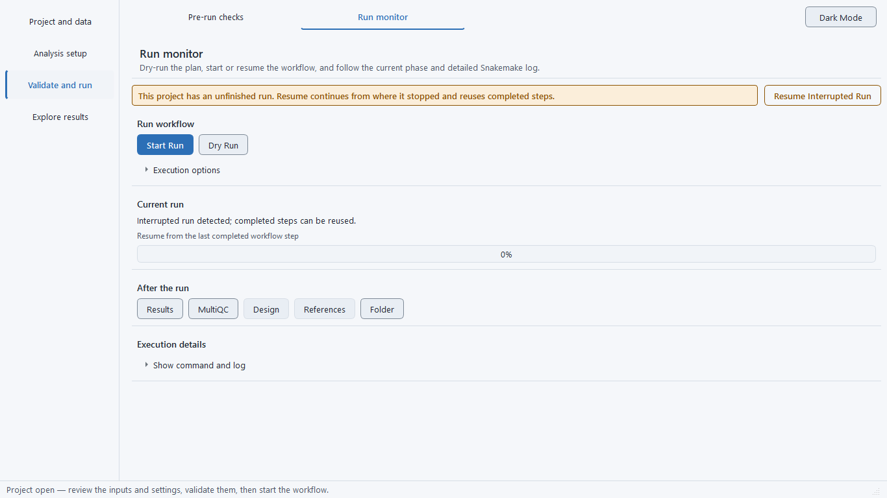

BulkSeq Studio: Installation and quick start
Get started
Install & setup
BulkSeq Studio is free and runs on Windows and Linux. You download one file, launch it, and let the app set up the bioinformatics tools for you the first time — no coding, and on Windows no administrator account for the install itself.
Windows
Use the approved public 0.26.6 release while 0.28.0 remains a source candidate:
- Installer — choose the approved Windows installer from the public Releases page. A per-user install needs no administrator rights; afterwards you launch it from the Start Menu.
- Portable archive — choose the approved Windows portable ZIP, unpack it, and launch
BulkSeqStudio.exe. Nothing is installed.
No 0.28.0 Windows binary is currently an accepted download. Use the public 0.26.6 release; running a newer approved installer in the future will detect an existing install and offer to update or uninstall first.
Linux
Use the approved public 0.26.6 release while native-Linux package validation for 0.28.0 remains pending:
- AppImage — select the approved AppImage from the public Releases page and make it executable before launch.
- Portable tarball — select the approved Linux portable archive, extract it, and run its bundled launcher.
- Updates — AppImageUpdate can use an approved AppImage's companion zsync file after that file has been published.
No 0.28.0 AppImage, zsync file, or Linux portable tarball is currently presented as built or accepted.
What is WSL2, and why does Windows need it?
The bioinformatics tools that do the analysis (alignment, counting, DESeq2, enrichment) are Linux programs. On Windows, BulkSeq Studio runs them inside WSL2 — the Windows Subsystem for Linux, a lightweight Linux that Windows runs quietly in the background. You never open a Linux terminal yourself. The window you see is only the graphical interface; the actual computation happens in a managed micromamba environment inside WSL2. The app can enable WSL2 and install that environment for you from its setup screen, so you do not configure anything by hand.
On Linux there is no WSL: the same interface runs the same pipeline directly in a local micromamba environment, and the results are identical.
Install and first run, step by step
-
Download and open the app
Download version 0.26.6 from the public Releases page and select its approved package for your platform. Version 0.28.0 is currently a source candidate, not an installable release, and an older package must not be relabelled as 0.28.0 evidence.
-
Let the Environment setup screen check your machine
On the first launch after install, the app opens this readiness screen automatically, once, so a missing tool (such as the R/DESeq2 stack) is caught up front rather than mid-run; you can reopen it any time from Check Environment on the Project page. It checks the pieces it needs and shows each one as Ready or Action needed, with an install button when something is missing.
-
Install anything marked "Action needed"
Work top to bottom: click each Install… button, then press Re-check to refresh the statuses. The downloads run inside your own WSL user account with no sudo password. Show details / log expands the full setup log if a step needs attention.
-
Click Continue when the header reads "4 of 4 ready"
Once every row is Ready, the screen is done. You can already create projects, edit metadata, and build configs while the tools finish installing; only starting a pipeline run needs them.

The four readiness rows (Windows first run)
- Python GUI / core packages — the libraries the interface itself needs.
- WSL2 — the lightweight Linux the pipeline runs inside, plus the micromamba package manager. If WSL2 is not yet enabled, this single step opens an Administrator PowerShell window once (Windows requires elevation only to turn the feature on), and you may be asked to reboot.
- Core bioinformatics environment ("bulkseq") — Snakemake, the three aligners (STAR, HISAT2, Salmon), featureCounts, samtools, fastp, FastQC, and MultiQC. The download takes a few minutes.
- R / DESeq2 stack — R with DESeq2, the enrichment packages, and the figure toolchain. This is the largest, slowest install and can take a while; you only do it once.
On Linux the WSL2 row does not apply — the pipeline runs locally and those controls are hidden.
Raising the WSL2 memory limit (Windows)
On Windows the pipeline runs inside WSL2, which by default may use only about half of your host RAM. That VM cap — not the Windows total — is what memory-heavy steps run against (STAR indexing and alignment on large genomes, or DESeq2 on big count matrices). The easiest way to raise it is the Edit WSL2 memory / CPU limits… button on the Compute resources page, which writes the caps and can restart WSL to apply them. To do it by hand instead, create or edit %UserProfile%\.wslconfig (a plain text file in your user folder), add a [wsl2] section, then apply it with wsl --shutdown in PowerShell before reopening the app:
[wsl2]
memory=48GB # cap the VM at 48 GB (default is ~50% of host RAM)
processors=16 # optional: limit WSL2 to 16 logical processorsSee Microsoft's Advanced settings configuration in WSL ↗ for every .wslconfig option. On Linux there is no cap to configure — the pipeline runs natively with your machine's full RAM.
Your first analysis
Quick start
From a public study to differential expression, enrichment, and an interactive protein network, without writing any code. The example below follows the most common path: paste study accessions, let the app fetch the data, and run.
The responsive task navigator groups the workflow into four stages: Project and data, Analysis setup, Validate and run, and Explore results. Wide windows show a stage rail with page buttons; compact windows show stage and page selectors. The same twelve pages are reachable in both layouts, and the light/dark control remains in the header.
-
Create or open a project
On the Project page, make a new project folder. The app scaffolds the
config/folder, a copy of the Snakemakeworkflow/, and a provenance manifest. On Windows, click Use WSL filesystem when prompted so the project lives on the fast Linux disk rather than aC:\drive. -
Choose an input
On the Add data page, pick how your data comes in. The simplest is to paste SRR / SRP / PRJ accessions — or an RNA-seq GSE series, which is resolved to its SRA runs — and click Fetch metadata & build samples; the ENA fetch reads the layout, FASTQ URLs, and read counts and builds the sample sheet for you. You can also select local FASTQ files, or skip alignment entirely with Use a Count Matrix, Upload DESeq2 Results, a GEO microarray series (GSE), or Upload a local microarray matrix (your own already-normalized array table).
-
Confirm the metadata and contrast
On the Samples page, the samples appear in an editable table. The
conditioncolumn is pre-filled with a group suggested from the fetched metadata (a GEO characteristic such as genotype or treatment, or a sample-title group) — confirm it or edit it, and check that the layout (paired or single-end) is correct. These groups define the comparison the local differential-expression model will run. -
Pick a reference and analysis options
On the Reference page, choose your organism from the 46-preset Ensembl / NCBI RefSeq catalog (or import a custom genome and annotation), then click Use Selected Preset. A reference is required before a run will start. On the Analysis settings page, set the trimmer, aligner, and rRNA tool (leave the aligner on STAR if unsure), pick the differential-expression engine, build the design and contrast (a Design helper can compose the formula from your sample metadata), set the
alphaand|log2FC|thresholds, and choose how to handle organellar genes. Advanced controls remain collapsed until requested. -
Start the run and watch the Run Monitor
Clear any flagged items on Pre-run checks, then go to Run monitor and click Start Run. A completed input check is tied to content fingerprints for the configuration, sample sheet, local inputs, reference locks, and index files; editing or replacing any of them invalidates the saved pass before launch or resume. The progress and plain-language current phase track the pipeline, while command and raw-log detail remains collapsed until requested. Use Stop to cancel, Resume to continue an interrupted run, and Unlock if a run was interrupted hard.

The Run Monitor after a finished run. The Export Tools & References and Export Study Design buttons save the exact tool versions, reference, and study design for that run. 
Reopen a project whose run was interrupted and the Run Monitor greets you with a one-click Resume Interrupted Run banner; completed steps are reused rather than rebuilt. -
Read the results
When the run finishes, Figures and tables lets you browse the count matrix and differential-expression table and view the applicable figures; toggle Vector (SVG) for a crisp preview at any zoom. Open Protein network to explore STRING interactions by pointer or keyboard, and use Reports or the Run monitor actions for the HTML results and MultiQC reports. Exported tools/references and study-design records describe only the route that ran and include platform details; an imported-results project records its source file integrity, source direction, and upstream method metadata without claiming a local DE model.
Try it now: a one-click example run
The source catalog provides five canonical one-click presets. They scaffold the samples, contrast, input route, and organism settings needed for a reproducible demonstration; they are separate from the deposited B1–B20 suite and do not establish package acceptance.
| Preset | Route and contrast |
|---|---|
| Pasilla paired-end subset | Four-sample Drosophila melanogaster paired-end RNA-seq; CG8144 RNAi versus untreated. |
| Yeast rpd3-delta Ume6 delta2-508 paired-end subset | Four-sample paired-end RNA-seq; an N-terminal Ume6 truncation in an rpd3-delta background versus the rpd3-delta control. This is not a complete UME6 gene deletion. |
| Rice CY1000 salt-stress paired-end subset | Six-sample paired-end RNA-seq; salt stress versus control in the CY1000 genotype. |
| Arabidopsis hub2-3 mutant vs Col-0 (ATH1 microarray) | Six-sample submitter-normalized ATH1 microarray; hub2-3 versus Col-0. |
| Yeast cbc2-delta vs wild-type (YG-S98 microarray) | Six-sample submitter-normalized YG-S98 microarray; cbc2-delta versus wild type. |
For a short RNA-seq example, choose Pasilla paired-end subset, open Run monitor, and start the run. In the definitive 0.28.0 source run, 467 genes met adjusted p < 0.05; within that FDR-selected set, 61 were up-regulated and 85 were down-regulated at raw |log2 fold change| ≥ 1. These direction counts use the raw differential-expression fold change, not its shrunken counterpart. Once the example makes sense, repeat the six steps above with your own study.
Combining two or more studies (meta-analysis)
To ask which genes respond consistently across several independent studies of the same contrast, put them all in one project and let BulkSeq Studio run a meta-analysis.
-
Add the samples of every study to one project
Bring in each study's samples the usual way — a merged count matrix, or a fetch that tags each accession with its study — so all of them sit in a single sample sheet.
-
Set the
datasetandconditioncolumnsOn the Samples page, give every row a
datasetvalue (its study of origin) and aconditionvalue (the compared group). Thedatasetcolumn must hold more than one study, and at least one study must contain both compared groups, or the confounding gate stops the run. -
Tick Multi-study meta-analysis and run
On the Analysis settings page, enable Multi-study meta-analysis, then start the run. Each study is analysed separately with DESeq2 and the per-study results are combined; the extra
meta_analysis_report.htmland theresults/meta/tables and comparative figures appear alongside the standard outputs.
Five ways in
Input modes
BulkSeq Studio meets your data wherever it already is. You can start from raw reads, from public accessions, from a count table, from a finished differential-expression table, or from a GEO microarray series. The mode you choose decides which steps run and which outputs you get; everything downstream of the entry point is shared, so the figures and enrichment look the same no matter how you got there.
1. SRA / ENA accessions
Paste SRR / SRP / PRJ accessions and the app fetches the ENA metadata, builds the sample sheet (layout, FASTQ URLs, read counts), and downloads the reads for you.
Unlocks the full pipeline: FastQC / MultiQC, trimming, alignment, gene counting, DESeq2, enrichment, figures, and the PPI network.
2. Local FASTQ files
Already downloaded your reads? Point the app at FASTQ files on disk. Single-end or paired-end, detected automatically from the sample sheet; both layouts run the full alignment route.
Same full pipeline as the accession route, minus the download step: QC, trimming, alignment, counting, DESeq2, enrichment, figures, PPI.
3. Count matrix (skip alignment)
Upload a gene-by-sample counts table (featureCounts output or any TSV/CSV) to skip download, QC, and alignment. The table must hold raw integer counts; normalized values (TPM/FPKM, log-CPM, or RMA intensities) are refused by default because DESeq2 models raw counts, while RSEM/tximport estimated (non-integer) counts can be opted in when you import.
Goes straight to DESeq2, then figures, enrichment, statistics, and the PPI network. Use this when alignment is already done elsewhere.
4. DESeq2 results table (bring your own)
Upload a finished differential-expression table shaped like DESeq2::results(). Required columns are a supported gene-ID column, log2FoldChange, and an adjusted-p column. The importer validates every row, requires unique safe identifiers and finite in-range numeric values, and rejects shifted fields or a supplied statistic whose sign contradicts the fold change. You confirm the source numerator and denominator before import; the project copy is then bound to its SHA-256, size, row count, and schema, and the up/down lists are derived from the supplied values and your thresholds.
No FASTQ, alignment, counts, or DESeq2 step. Produces functional enrichment, the volcano / MA / p-value figures, the STRING PPI network, the MSigDB set-overlap test, and a preranked .rnk. Outputs that need per-sample counts (PCA, sample-correlation, count heatmaps, the Wilcoxon test, the normalized-expression export) are skipped.
5. GEO microarray series (GSE)
Enter a GEO series accession. A processing selector chooses how the intensities come in: the GEO series matrix (submitter-normalized, the default and correct for most datasets) or Affymetrix raw CEL → RMA re-normalization, with a log2-transform choice (auto-detect, force, or off). The app maps probes to gene symbols and runs limma differential expression into a DESeq2-shaped results table; the GEO platform (GPL) and series accession are recorded in the run summary, the report, and the provenance exports.
Instead of an accession, you can click Upload a local microarray matrix and provide your own gene-by-sample expression matrix (first column gene IDs or symbols, one column per sample; TSV or CSV; already-normalized log2 intensities). It runs the same limma → figures → enrichment path with no GEO accession or download — the microarray counterpart of the count-matrix upload.
From there it runs the same figures, enrichment, genes-of-interest, and networks as the RNA-seq routes. RNA-seq series pasted here are redirected to the SRA box.